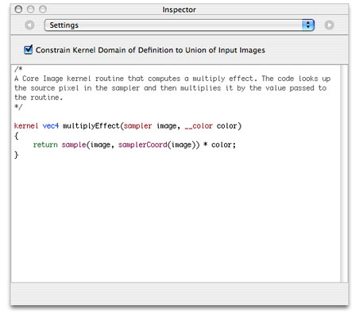

Writing Kernels
The heart of any image processing filter is the kernel file. A kernel file contains one or more kernel routines and any required subroutines. A kernel routine gets called once for each pixel for the destination image. The routine must return a vec4 data type. Although this four-element vector typically contains pixel data, the vector is not required to represent a pixel. However, the kernel routines in this chapter produce only pixel data because that’s the most common data returned by a kernel routine.
A kernel routine can:
Fabricate the data. For example, a routine can produce random pixel values, generate a solid color, or produce a gradient. It can generate patterns, such as stripes, a checkerboard, a starburst, or color bars.
Modify a single pixel from a source image. A
kernelroutine can adjust hue, exposure, white point values, replace colors, and so on.Sample several pixels from a source image to produce the output pixel. Stylize filters such as edge detection, pixellate, pointillize, gloom, and bloom use this technique.
Use location information from one or more pixels in a source image to produce the output pixel. Distortion effects, such as bump, pinch, and hole distortions are created this way.
Produce the output pixel by using data from a mask, texture, or other source to modify one or more pixels in a source image. The Core Image stylize filters—height field from mask, shaded material, and the disintegrate with mask transition—are examples of filters that use this technique.
Combine the pixels from two images to produce the output pixel. Blend mode, compositing, and transition filters work this way.
This chapter shows how to write a variety of kernel routines. First you’ll see what the programming constraints, or rules, are. Then you’ll learn how to write a simple filter that operates on one input pixel to produce one output pixel. As the chapter progresses, you’ll learn how to write more complex kernel routines, including those used for a multipass filter.
Although the kernel routine is where the per-pixel processing occurs, it is only one part of an image unit. You also need to write code that provides input data to the kernel routine and performs a number of other tasks as described in “Writing the Objective-C Portion.” Then you’ll need to bundle all the code by following the instructions in “Preparing an Image Unit for Distribution.”
Before continuing in this chapter, see Core Image Kernel Language Reference for a description of the language you use to write kernel routines. Make sure you are familiar with the constraints discussed in “Kernel Routine Rules.”
In this section:
Writing Simple Kernel Routines
Testing Kernel Routines in Quartz Composer
Writing Advanced Kernel Routines
Writing Kernel Routines for a Detective Lens
Solution to the Kernel Challenge
Next Steps
Writing Simple Kernel Routines
A kernel routine that operates on the color of a source pixel at location (x, y) to produce a pixel at the same location in the destination image is fairly straightforward to write. In general, a kernel routine that operates on color follows these steps:
Gets the pixel from the source image that is at the same location as the pixel you want to produce in the output image. The Core Image Kernel Language function
samplereturns the pixel value produced by the specifiedsamplerat a specified point. To get the specified point, use the functionsamplerCoord, which returns the position, in sampler space, that is associated with the current output pixel after any transformation matrix associated with the sampler is applied. That means if the image is transformed in some way (for example, rotation or scaling), thesamplerensures that the transformation is reflected in the sample it fetches.Operates on the color values.
Returns the modified pixel.
Equations for this sort of filter take the following form:
Depending on the operation, you may need to unpremultiply the color values prior to operating on them and the premultiply the color values before returning the modified pixel. The Core Image Kernel Language provides the unpremultiply and premultiply functions for this purpose.
Color Inversion
Color component values for pixels in Core Image are floating-point values that range from 0.0 (color component absent) to 1.0 (color component present at 100%). Inverting a color is accomplished by reassigning each color component of value of 1.0 – component_value, such that:
red_value = 1.0 - red_value |
blue_value = 1.0 - blue_value |
green_value = 1.0 - green_value |
Figure 2-1 shows a grid of pixels. If you invert the color of each pixel by applying these equations, you get the resulting grid of pixels shown in Figure 2-2.
Take a look at the kernel routine in Listing 2-1 to see how to implement color inversion. A detailed explanation for each numbered line of code appears following the listing. You’ll see how to write the Objective-C portion that packages this routine as an image unit by reading “Creating a Color Inversion Image Unit.”
Listing 2-1 A kernel routine that inverts color
kernel vec4 _invertColor(sampler source_image) // 1 |
{ |
vec4 pixValue; // 2 |
pixValue = sample(source_image, samplerCoord(source_image)); // 3 |
unpremultiply(pixValue); // 4 |
pixValue.r = 1.0 - pixValue.r; // 5 |
pixValue.g = 1.0 - pixValue.g; |
pixValue.b = 1.0 - pixValue.b; |
return premultiply(pixValue); // 6 |
} |
Here’s what the code does:
Takes a
samplerobject as an input parameter. Recall (see “Kernel Routine Rules”) thatkernelroutines do not take images as input parameters. Instead, thesamplerobject is in charge of accessing image data and providing it to thekernelroutine.A routine that modifies a single pixel value will always have a
samplerobject as an input parameter. Thesamplerobject for this category ofkernelroutine is passed in from aCISamplerobject created in the Objective-C portion of an image unit. (See “Division of Labor.”) Thesamplerobject simply retrieves pixel values from the a source image. You can think of thesamplerobject as a data source.Declares a
vec4data type to hold the red, green, blue, and alpha component values of a pixel. A four-element vector provides a convenient way to store pixel data.Fetches a pixel value from the source image. Let’s take a closer look at this statement, particularly the
sampleandsamplerCoordfunctions provided by the Core Image Kernel Language. ThesamplerCoordfunction returns the position, in sampler space, associated with the current destination pixel after any transformations associated with the image source or the sampler are applied to the image data. As thekernelroutine has no way of knowing whether any transformations have been applied, it’s best to use thesamplerCoordfunction to retrieve the the position. When you read “Writing the Objective-C Portion” you’ll see that it is possible, and often necessary, to apply transformations in the Objective-C portion of an image unit.The
samplefunction returns the pixel value obtained by thesamplerobject from the specified position. This function assumes the position is in sampler space, which is why you need to nest the call tosamplerCoordto retrieve the position.Unpremultiplies the pixel data. If your routine operates on color data that could have an alpha value other then
1.0(fully opaque), you need to call the Core Image Kernel Language functionunpremultiply(or take similar steps—see the advanced tip below) prior to operating on the color valuesNote: Core Image always works in an RGB colorspace. Data, such as YUV, must first be converted to RGB. Such conversion is at a much higher level than the
kernelroutine. However, Core Image performs the conversion of YUV texture data automatically for you. Keep in mind that the data provided to yourkernelroutine by Core Image is always RGB based.Inverts the red color component. The next two lines invert the green and blue color components. Note that you can access the individual components of a pixel by using
.r,.g,.b, and.ainstead of a numerical index. That way, you never need to concern yourself with the order of the components. (You can also use.x,.y,.z, and.was field accessors.)Premultiplies the data and returns a
vec4data type that contains inverted values for the color components of the destination pixel. The functionpremultiplyis defined by the Core Image Kernel Language.
Advanced Tip: The following is a more efficient way to write Listing 2-1, and faster to execute. The code simply subtracts the red, green, and blue values from the alpha value. For any value of alpha, this has the same result as Listing 2-1. The pixValue.aaa notation might look a bit odd, but it is valid, and represents a three-element vector made up of three identical values (the alpha value).
kernel vec4 _invertColor(sampler source_image) |
{ |
vec4 pixValue; 2 |
pixValue = sample(source_image, samplerCoord(source_image)); |
pixValue.rgb = pixValue.aaa - pixValue.rgb; |
return pixValue; |
} |
When you apply a color inversion kernel routine to the image shown in Figure 2-3 you get the result shown in Figure 2-4.
Color Component Rearrangement
Listing 2-2 shows another simple kernel routine that modifies the color values of a pixel by rearranging the color component values. The red channel is assigned the green values. The green channel is assigned the blue values. The blue channel is assigned the red values. Applying this filter to the image shown in Figure 2-5 results in the image shown in Figure 2-6.
As you can see, the routine in Listing 2-2 is very similar to Listing 2-1. This kernel routine, however, uses two vectors, one for the pixel provided from the source image and the other to hold the modified values. The alpha value remains unchanged, but the red, green, and blue values are shifted.
Listing 2-2 A kernel routine that places RGB values in the GBR channels
kernel vec4 RGB_to_GBR(sampler source_image) |
{ |
vec4 originalColor, twistedColor; |
originalColor = sample(image, samplerCoord(source_image)); |
twistedColor.r = originalColor.g; |
twistedColor.g = originalColor.b; |
twistedColor.b = originalColor.r ; |
twistedColor.a = originalColor.a; |
return twistedColor; |
} |
Color Multiplication
Color multiplication is true to its name; it multiplies each pixel in a source image by a specified color. Figure 2-7 shows the effect of applying a color multiply filter to the image shown in Figure 2-5.
Listing 2-3 shows the kernel routine used to produce this effect. So that you don’t get the idea that a kernel can take only one input parameter, note that this routine takes two input parameters—one a sampler object and the other a __color data type. The __color data type is one of two data types defined by the Core Image kernel language; the other data type is sampler, which you already know about. These two data types are not the only ones that you can use input parameters to a kernel routine. You can also use these data types which are defined by the Open GL Shading Language (glslang)—float, vec2, vec3, vec4.
Important: Keep in mind, however, that in the Objective-C portion of the filter, all data types passed to the kernel routine must be packaged Objective-C objects. See “Kernel Routine Rules” for details.
The color supplied to a kernel routine will be matched, by Core Image, to the working color space of the Core Image context associated with the kernel. There is nothing that you need to do regarding color in the kernel. Just keep in mind that, to the kernel routine, __color is a vec4 data type in premultiplied RGBA format, just as the pixel values fetched by the sampler are.
Listing 2-3 points out an important aspect of kernel calculations—the use of vector math. The sample fetched by the Core Image Kernel Language function sample is a four-element vector. Because it is a vector, you can multiply it directly by multiplyColor; there is no need to access each component separately.
By now you should be used to seeing the samplerCoord function nested with the sample function!
Listing 2-3 A kernel routine that produces a multiply effect
kernel vec4 multiplyEffect (sampler image_source, __color multiplyColor) |
{ |
return sample (image_source, samplerCoord (image_source)) * multiplyColor; |
} |
A Kernel Challenge
Now that you’ve seen how to write kernel routines that operate on a single pixel, it’s time to challenge yourself. Write a kernel routine that produces a monochrome image similar to what’s shown in Figure 2-8. The filter should take two input parameters, a sampler and a __color. Use Quartz Composer to test and debug your routine. You can find a solution in “Solution to the Kernel Challenge.”
Testing Kernel Routines in Quartz Composer
The kernel routine, as you know, is one part of a Core Image filter. There is still a good deal of code that you need to write at a level higher than the kernel routine and a bit more work beyond that to package your image processing code as an image unit. Fortunately, you don’t need to write this additional code to test simple kernel routines. You can instead use Quartz Composer.
Quartz Composer is a development tool for processing and rendering graphical data. It’s available on any computer that has the Developer tools installed. You can find it in /Developer/Applications. The following steps will show you how to use Quartz Composer to test each of the kernel routines you’ve read about so far.
Note: Before you follow these steps, you’ll need to familiarize yourself with Quartz Composer by reading Quartz Composer User Guide. The time that you spend learning to use Quartz Composer will save you a lot of time debugging and testing many of the kernel routines that your write.
Launch Quartz Composer by double-clicking its icon in
/Developer/Applications.In the sheet that appears, choose Blank Composition.
Open the Patch Creator and search for Core Image Filter.
Add the Core Image Filter patch to the workspace.
Use the search field to locate the Billboard patch, then add that patch to the workspace.
In a similar manner, locate the Image Importer patch and add it to the workspace.
Connect the Image output port on the Image Importer patch to the Image input port on the Core Image Filter patch.
Connect the Image output port on the Core Image Filter patch to the Image input port on the Billboard.
Click the Image Importer patch and then click the Inspector button on the toolbar.
Choose Settings from the inspector pop-up menu. Then click Import From File and choose an image.
Click Viewer in the toolbar to make sure that the Viewer window is visible.
You should see the image that you imported rendered to the Viewer window.
Click the Core Image Filter patch and open the inspector to the Settings pane.
Note that there is already a
kernelroutine entered for a multiply effect. If you want to see how that works, choose Input Parameters from the inspector pop-up menu and then click the color well to set a color. You immediately see the results in the Viewer window.Copy the
kernelroutine shown in Listing 2-1 and replace the multiply effect routine that’s in the Settings pane of the Core Image Kernel patch.Notice that not only does the image on the Viewer window change (its color should be inverted), but the Core Image Kernel patch automatically changes to match the input parameters of the kernel routine. The invert color kernel has only one input parameter, whereas the multiply effect supplied as a default had two parameters.
Follow the same procedure to test the
kernelroutine shown in Listing 2-2.
Writing Advanced Kernel Routines
Up to now you’ve seen how to write several simple kernel routines that operate on a pixel from a source image to produce a pixel in a destination image that’s at the same working-space coordinate as the pixel from the source image. Some of the most interesting and useful filters, however, do not use this one-to-one mapping. These more advanced kernel routines are what you’ll learn about in this section.
Recall from “An Image Unit and Its Parts” that kernel routines that do not use a one-to-one mapping require a region-of-interest method that defines the area from which a sampler object can fetch pixels. The kernel routine knows nothing about this method. The routine simply takes the data that is passed to it, operates on it, and computes the vec4 data type that the kernel routine returns. As a result, this section doesn’t show you how to set up the ROI method. You’ll see how to accomplish that task in “Writing the Objective-C Portion.” For now, assume that each sampler passed to a kernel routine supplies data from the appropriate region of interest.
An example of an image produced by an advanced kernel routine is shown in Figure 2-9. The figure shows a grid of pixels produced by a “color block” kernel routine. You’ll notice that the blocks of color are 4 pixels wide and 4 pixels high. The pixels marked with “S” denote the location of the pixel in a source image from which the 4 by 4 block inherits its color. As you can see, the kernel routine must perform a one-to-many mapping. This is just the sort of operation that the the pixellate kernel routine discussed in detail in “Pixellate” performs.
You’ll see how to write two other advanced kernel routines in “Edge Enhancement” and “Fun House Mirror Distortion.”
Pixellate
A pixellate filter uses a limited number of pixels from a source image to produce the destination image, as described in previously. Compare Figure 2-3 with Figure 2-10. Notice that the processed image looks blocky; it is made up of dots of a solid color. The size of the dots are determined by a scaling factor that’s passed to the kernel routine as an input parameter.
The trick to any pixellate routine is to use a modulus operator on the coordinates to divide the coordinates into discrete steps. This causes your code to read the same source pixel until your output coordinate has incremented beyond the threshold of the scale, producing an effect similar to that shown in Figure 2-10. The code shown in Listing 2-4 creates round dots instead of squares by creating an anti-aliased edge that produces the dot effect shown in Figure 2-11. Notice that each 4-by-4 block represents a single color, but the alpha component varies from 0.0 to 1.0. Anti-aliasing effects are used in a number of filters, so it is worthwhile to study the code, shown in Listing 2-4, that accomplishes this.
The pixellate kernel routine takes two input parameters: a sampler object for fetching samples from the source image and a floating-point value that specifies the diameter of the dots. A detailed explanation for each numbered line of code appears following the listing.
Listing 2-4 A kernel routine that pixellates
kernel vec4 roundPixellate(sampler src, float scale)// 1 |
{ |
vec2 positionOfDestPixel, centerPoint; // 2 |
float d, radius; |
vec4 outValue; |
float smooth = 0.5; |
radius = scale / 2.0; |
positionOfDestPixel = destCoord();// 3 |
centerPoint = positionOfDestPixel; |
centerPoint.x = centerPoint.x - mod(positionOfDestPixel.x, scale) + radius; // 4 |
centerPoint.y = centerPoint.y - mod(positionOfDestPixel.y, scale) + radius; // 5 |
d = distance(centerPoint, positionOfDestPixel); // 6 |
outValue = sample(src, samplerTransform(src, centerPoint)); // 7 |
outValue.a = outValue.a * smoothstep((d - smooth), d, radius); // 8 |
return premultiply(outValue); // 9 |
} |
Here’s what the code does:
Takes a
samplerand a scaling value. Note the scaling value is declared as afloatdata type here, but when you write the Objective-C portion of the filter, you must pass thefloatas anNSNumberobject. Otherwise, the filter will not work. See “Kernel Routine Rules.”Declares two
vec2data types. ThecenterPointvariable holds the coordinate of the pixel that determines the color of a block; it is the “S” shown in Figure 2-11. ThepositionOfDestPixelvariable holds the position of the destination pixel.Gets the position, in working-space coordinates, of the pixel currently being computed. The function
destCoordis defined by the Core Image Kernel Language. (See Core Image Kernel Language Reference.)Calculates the x-coordinate for the pixel that determines the color of the destination pixel.
Calculates the y-coordinate for the pixel that determines the color of the destination pixel.
Calculates how far the destination pixel is from the center point (“S”). This distance determines the value of the alpha component.
Note: The
distancefunction is defined in the OpenGL Shading Language specification. It returns the distance between two points.float distance (genType p0, genType p1);Fetches a pixel value from the source image, at the location specified by the
centerPointvector.Recall that the
samplefunction returns the pixel value produced by thesamplerat the specified position. This function assumes the position is in sampler space, which is why you need to nest the call tosamplerCoordto retrieve the position.Creates an anti-aliased edge by multiplying the alpha component of the destination pixel by the
smoothstepfunction defined by glslang. (See the OpenGL Shading Language specification.)Premultiplies the result before returning the value.
You’ll see how to write the Objective-C portion that packages this routine as an image unit by reading “Creating a Pixellate Image Unit.”
Edge Enhancement
The edge enhancement kernel routine discussed in this section performs two tasks. It detects the edges in an image using a Sobel template. It also enhances the edges. Although the kernel routine operates on all color components, you can get an idea of what is does by comparing Figure 2-12 with Figure 2-13.
Note: There are many ways to computationally detect edges in an image. One approach is to use a template as a model of the ideal edge. An edge-detection template approximates the gradient at the pixel that corresponds to the center of the template. A Sobel template is a commonly used template because it provides a very good edge model while remaining small and thus not too costly from a computational standpoint. The template used here is implemented as a set of convolution masks whose weights on the diagonal elements are less than those on the horizontal and vertical elements. For details, see one of the image processing books suggested in “Further Reading.”
The _EdgyFilter kernel is shown in Listing 2-5. It takes two parameters, a sampler for fetching image data from a source image and a power parameter that’s used to brighten or darken the image. A detailed explanation for each numbered line of code appears following the listing.
Listing 2-5 A kernel routine that enhances edges
kernel vec4 _EdgyFilter(sampler image, float power) // 1 |
{ |
const vec2 xy = destCoord(); // 2 |
vec4 p00,p01,p02, p10,p12, p20,p21,p22; // 3 |
vec4 sumX, sumY, computedPixel; // 4 |
float edgeValue; |
p00 = sample(image, samplerTransform(image, xy+vec2(-1.0, -1.0))); // 5 |
p01 = sample(image, samplerTransform(image, xy+vec2( 0.0, -1.0))); |
p02 = sample(image, samplerTransform(image, xy+vec2(+1.0, -1.0))); |
p10 = sample(image, samplerTransform(image, xy+vec2(-1.0, 0.0))); |
p12 = sample(image, samplerTransform(image, xy+vec2(+1.0, 0.0))); |
p20 = sample(image, samplerTransform(image, xy+vec2(-1.0, +1.0))); |
p21 = sample(image, samplerTransform(image, xy+vec2( 0.0, +1.0))); |
p22 = sample(image, samplerTransform(image, xy+vec2(+1.0, +1.0))); |
sumX = (p22+p02-p20-p00) + 2.0*(p12-p10); // 6 |
sumY = (p20+p22-p00-p02) + 2.0*(p21-p01); // 7 |
edgeValue = sqrt(dot(sumX,sumX) + dot(sumY,sumY)) * power; // 8 |
computedPixel = sample(image, samplerCoord(image)); // 9 |
computedPixel.rgb = computedPixel.rgb * edgeValue; // 10 |
return computedPixel; // 11 |
} |
Here’s what the code does:
Takes a
samplerand apowervalue. Note that thepowervalue is declared as afloatdata type here, but when you write the Objective-C portion of the filter, you must pass thefloatas anNSNumberobject. Otherwise, the filter will not work. See “Kernel Routine Rules.”Gets the position, in working-space coordinates, of the pixel currently being computed. The function
destCoordis defined by the Core Image Kernel Language. (See Core Image Kernel Language Reference.)Declares 8 four-element vectors. These vectors will hold the values of the 8 pixels that are neighbors to the destination pixel that the
kernelroutine is computing.Declares vectors to hold the intermediate results and the final computed pixel.
This and the following seven lines of code fetch 8 neighboring pixels.
Computes the sum of the x values of the neighboring pixels, weighted by the Sobel template.
Computes the sum of the y values of the neighboring pixels, weighted by the Sobel template.
Computes the magnitude, then scales by the
powerparameter. The magnitude provides the edge detection/enhancement portion of the filter, and the power has a brightening (or darkening) effect.Gets the pixel whose destination value needs to be computed.
Modifies the color of the destination pixel by the edge value.
Returns the computed pixel.
When you apply the _EdgyFilter kernel to the image shown in Figure 2-3, you get the resulting image shown in Figure 2-14.
Fun House Mirror Distortion
The fun house mirror distortion kernel routine is provided as the default kernel routine for the image unit template in Xcode. (You’ll learn how to use the image unit template in “Writing the Objective-C Portion.”) Similar to a mirror in a carnival fun house, this filter distorts an image by stretching and magnifying a vertical strip of the image. Compare Figure 2-15 with Figure 2-3.
The fun house kernel routine shown in Listing 2-6 takes the following parameters:
srcis thesamplerthat fetches image data from a source image.center_xis the x coordinate that defines the center of the vertical strip in which the warping takes place.inverse_radiusis the inverse of the radius. You can avoid a division operation in thekernelroutine by performing this calculation outside the routine, in the Objective-C portion of the filter.radiusis the extent of the effect.scalespecifies the amount of warping.
The mySmoothstep routine in Listing 2-6 is a custom smoothing function to ensure that the pixels at the edge of the effect blend with the rest of the image.
Listing 2-6 Code that creates a fun house mirror distortion
float mySmoothstep(float x) |
{ |
return (x * -2.0 + 3.0) * x * x; |
} |
kernel vec4 funHouse(sampler src, float center_x, float inverse_radius, |
float radius, float scale) // 1 |
{ |
float distance; |
vec2 myTransform1, adjRadius; |
myTransform1 = destCoord(); // 2 |
adjRadius.x = (myTransform1.x - center_x) * inverse_radius; // 3 |
distance = clamp(abs(adjRadius.x), 0.0, 1.0); // 4 |
distance = mySmoothstep(1.0 - distance) * (scale - 1.0) + 1.0; // 5 |
myTransform1.x = adjRadius.x * distance * radius + center_x; // 6 |
return sample(src, samplerTransform(src, myTransform1)); // 7 |
} |
Here’s what the code does:
Takes a
samplerand fourfloatvalues as parameters. Note that when you write the Objective-C portion of the filter, you must pass eachfloatvalue as anNSNumberobject. Otherwise, the filter will not work. See “Kernel Routine Rules.”Fetches the position, in working-space coordinates, of the pixel currently being computed.
Computes an x coordinate that’s adjusted for it’s distance from the center of the effect.
Computes a distance value based on the adjusted x coordinate and that varies between
0and1. Essentially, this normalizes the distance.Adjusts the normalized distance value so that is varies along a curve. The
scalevalue determines the height of the curve. The radius value used previously to calculate the distance determines the width of the curve.Computes a transformation vector.
Returns the pixel located at the position in the coordinate space after the coordinate space is transformed by the
myTransform1vector.
Take a look at the default image unit in Xcode to see what’s required for the Objective-C portion of the image unit. (See “The Image Unit Template in Xcode.”) You’ll see that a region-of-interest method is required. You’ll also notice that the inverse radius calculation is computed in the outputImage method.
Writing Kernel Routines for a Detective Lens
This section describes a more sophisticated use of kernel routines. You’ll see how to create two kernel routines that could stand on their own, but later, in “Creating a Detective Lens Image Unit,” you’ll see how to combine them to create a filter that, to the user, will look similar to a physical magnification lens, as shown in Figure 2-16.
To create this effect, it’s necessary to perform tasks outside the kernel routine. You’ll need Objective-C code to set up region-of-interest routines, to set up input parameters for each kernel routine, and to pass the output image produced by each kernel routine to a compositing filter. You’ll see how to accomplish these tasks later. After a discussion of the problem and the components of a detective lens, you’ll see how to write each of the kernel routines.
The Problem: Why a Detective Lens?
The resolution of images taken by today’s digital cameras have outpaced the resolution of computer displays. Images are typically downsampled by image editing applications to allow the user to see the entire image onscreen. Unfortunately, the downsampling hides the details in the image. One solution is to show the image using a 1:1 ratio between the screen resolution and the image resolution. This solution is not ideal, because only a portion of the image is displayed onscreen, causing the user to scroll in order to view other parts of the image.
This is where the detective lens filter comes in. The filter allows the user to inspect the details of part of a high resolution image, similar to what’s shown in Figure 2-17. The filter does not actually magnify the original image. Instead, it displays a downsampled image for the pixels that are not underneath the lens and fetches pixels from the unscaled original image for the pixels that are underneath the lens.
Note: Why a detective lens? Although the filter could just as easily be called a loupe filter, “detective” more readily calls to mind the act of searching for details.
Detective Lens Anatomy
Before writing any kernel routine, it’s helpful to understand the parameters that control the image processing effect you want to achieve. Figure 2-18 shows a diagram of the top view of the lens. The lens, has a center and a diameter. The lens holder has a width. The lens also has:
An opacity. Compare the colors underneath the lens with those outside the lens in Figure 2-17.
Reflectivity, which can cause a shiny spot on the lens if the lens does not have a modern reflection-free coating.
Figure 2-19 shows another characteristic of the lens that influences its effect—roundness. This lens is convex, but the height shown in the diagram (along with the lens diameter) controls how curved the lens is.
The lens holder has additional characteristics as you can see in Figure 2-20. This particular lens holder has a fillet. A fillet is a strip of material that rounds off an interior angle between two sections. By looking at the cross section, you’ll see that the lens holder can have three parts to it—an inner sloping section, an outer sloping section, and a flat top. The fillet radius determines whether there is a flat top, as shown in the figure. If the fillet radius is half the lens holder width, there is no flat top. If the fillet radius is less than half the lens holder width, there will be a flattened section as shown in the figure.
Next you’ll take a look at the kernel routines needed to produce the lens and lens holder characteristics.
The Lens Kernel Routine
The lens kernel routine must produce an effect similar to a physical lens. Not only should the routine appear to magnify what’s underneath it, but it should be slightly opaque and reflect some light. Figure 2-21 shows a lens with those characteristics.
In previous sections, you’ve seen how to write routines that require only one sampler. The kernel routine that produced the effect shown in Figure 2-21 requires three sampler objects for fetching pixels from:
The high-resolution image. Recall that the purpose of the lens is to allow the user to inspect details in an image that’s too large to fit onscreen. This
samplerobject fetches pixels to show underneath the lens—the part of the image that will appear magnified. Depending on the amount of magnification desired by the filter client, thesamplermight need to downsample the high resolution image.A downsampled version of the high-resolution image. This
samplerobject fetches pixels to show outside the lens—the part of the image that will not appear to be magnified.The highlight image. These samples are used to generate highlights in the lens to give the appearance of the lens being reflective. Figure 2-22 shows the highlight image. The highlights are so subtle, that to reproduce the image for this document, transparent pixels are represented as black. White pixels are opaque. The highlight shown in the figure is exaggerated so that it can be seen here.
Recall that the setup work for sampler objects is done in the Objective-C portion of an image unit. See “Division of Labor.” You’ll see how to set up the CISampler objects in “Creating a Detective Lens Image Unit.”
The lens kernel routine (see Listing 2-7) takes nine input parameters:
downsampled_srcis thesamplerassociated with the downsampled version of the image.hires_srcis thesamplerassociated with the high resolution image.highlightsis thesamplerassociated with the highlight image.centeris a two-element vector that specifies the center of the magnifying lens.radiusis the radius of the magnifying lens.roundnessis a value that specifies how convex the lens is.opacityspecifies how opaque the glass of the magnifying lens is. If the lens has a reflection-free coating, this value is0.0. If it is as reflective as possible, the value is1.0.highlight sizeis a two-element vector that specifies the height and width of the highlight image.
Now that you know a bit about the lens characteristics and the input parameters needed for the kernel routine, take a look at Listing 2-7. After the necessary declarations, the routine starts out by calculating normalized distance. The three lines of code that perform this calculation are typical of routines that operate within a portion of an image. Part of the routine is devoted to calculating and applying a transform that determines which pixel from the highlight image to fetch, and then modifying the magnified pixel by the highlight pixel. You’ll find more information in the detailed explanation for each numbered line of code that follows the listing.
Listing 2-7 A kernel routine for a lens
kernel vec4 lens(sampler downsampled_src, sampler highres_src, sampler highlights, |
vec2 center, float radius, float magnification, |
float roundness, float opacity, vec2 highlightsSize) // 1 |
{ |
float dist, mapdist; // 2 |
vec2 v0; // 3 |
vec4 pix, pix2, mappix; // 4 |
v0 = destCoord() - center; // 5 |
dist = length(v0); // 6 |
v0 = normalize(v0); // 7 |
pix = sample(downsampled_src, samplerCoord(downsampled_src)); // 8 |
mapdist = (dist / radius) * roundness; // 9 |
mappix = sample(highlights, samplerTransform(highlights, |
highlightsSize * (v0 * mapdist + 1.0) * 0.5)); // 10 |
mappix *= opacity; // 11 |
pix2 = sample(highres_src, samplerCoord(highres_src)); // 12 |
pix2 = mappix + (1.0 - mappix.a) * pix2; // 13 |
return mix(pix, pix2, clamp(radius - dist, 0.0, 1.0)); // 14 |
} |
Here’s what the code does:
Takes three
samplerobjects, fourfloatvalues, and twovec2data types as parameters. Note that when you write the Objective-C portion of the filter, you must pass eachfloatandvec2values asNSNumberobjects. Otherwise, the filter will not work. See “Kernel Routine Rules.”Declares two variables:
distprovides intermediate storage for calculating amapdistdistance.mapdistis used to determine which pixel to fetch from the highlight image.Declares a two-element vector for storing normalized distance.
Declares three four-element vectors for storing pixel values associated with the three
samplersources.Subtracts the vector that represents the center point of the lens from the vector that represents the destination coordinate.
Calculates the length of the difference vector.
Note: The
lengthfunction is defined in the OpenGL Shading Language specification:float length(genType x);It returns the length of a vector, calculated by this formula:sqrt (x1*x2 + y1*y2)Normalizes the distance vector.
Note: The
normalizefunction is defined in the OpenGL Shading Language specification:genType normalize(genType x);It returns a vector with a length of1that lies in the same direction asx.Fetches a pixel from the downsampled image. Recall that this image represents the pixels that appear outside the lens—the “unmagnified” pixels.
Calculates the distance value that is needed to determine which pixel to fetch from the highlight image. This calculation is needed because the size of the highlight image is independent of the diameter of the lens. The calculation ensures that the highlight image stretches or shrinks to fit the area of the lens.
Fetches a pixel from the highlight image by applying a transform based on the distance function and the size of the highlight.
Modifies the pixel fetched from the highlight image to account for the opacity of the lens.
Fetches a pixel from the high resolution image. You’ll see later (“Creating a Detective Lens Image Unit”) that the magnification is applied in the Objective-C portion of the image unit.
Modifies the pixel from the high resolution image by the opacity-adjusted highlight pixel.
Softens the edge between the magnified (high resolution image) and unmagnified (downsampled image) pixels.
The
mixandclampfunctions provided by OpenGL Shading Language have hardware support and, as a result, are much more efficient for you to use than to implement your own.The
clampfunctiongenType clamp (genType x, float minValue, float maxValue)returns:
min(max(x, minValue), maxValue)If the destination coordinate falls within the area of the lens, the value of
xis returned; otherwiseclampreturns0.0.The
mixfunctiongenType mix (genType x, genType y,float a)returns the linear blend between the first two arguments (x, y) passed to the function:
x * (1 - a) + y * aIf the destination coordinate falls outside of the area of the lens (
a = 0.0),mixreturns an unmagnified pixel. If the destination coordinate falls on the edges of the lens (a = 1.0),mixreturns a linear blend of the magnified and unmagnified pixels. If the destination coordinate inside the area of the lens,mixreturns magnified pixel.
The Lens Holder Kernel Routine
The lens holder kernel routine is generator routine in that is does not operate on any pixels from the source image. The kernel routine generates an image from a material map, and that image sits on top of the source image. See Figure 2-23.
The material map for the lens holder is shown in Figure 2-24. It is a digital photograph of a highly reflective ball. You can just as easily use another image of reflective material.
The kernel routine performs several calculations to determine which pixel to fetch from the material map for each location on the lens holder. The routine warps the material map to fit the inner part of the lens holder and warps it in reverse so that it fits the outer part of the lens holder. If the fillet radius is less than one-half the lens holder radius, the routine colors the flat portion of the lens holder by using pixels from the center portion of the material map. It may be a bit easier to see the results of the warping by looking at the lens holder in Figure 2-25, which was created from a checkerboard pattern. The figure also demonstrates that if you don’t use an image that has reflections in it, the lens holder won’t look realistic.
The lens holder kernel routine (see Listing 2-8) takes six input parameters:
materialis asamplerobject that fetches samples from the material map shown in Figure 2-24.centeris a two-element vector that specifies the center of the lens that the lens holder is designed to hold.innerRadiusis the distance from the center of the lens to the inner edge of the lens holder.outerRadiusis the distance from the center of the lens to the outer edge of the lens holder.filletRadiusis the distance from the lens holder edge towards the lens holder center. This value should be less than half the lens holder radius.materialSizeis a two-element vector that specifies the height and width of the material map.
The routine shown in Listing 2-8 starts with the necessary declarations. Similar to the lens kernel routine, the lens holder kernel routine calculates normalized distance. Its effect is limited to a ring shape, so the normalized distance is needed to determine where to apply the effect. The routine also calculated whether the destination coordinate is on the inner or outer portion of the ring (that is, lens holder). Part of the routine constructs a transform that is then used to fetch a pixel from the material map. The material map size is independent of the inner and outer lens holder diameter, so a transform is necessary to perform the warping required to map the material onto the lens holder. You’ll find more information in the detailed explanation for each numbered line of code that follows the listing.
Listing 2-8 A kernel routine that generates a magnifying lens holder
kernel vec4 ring(sampler material, vec2 center, float innerRadius, |
float outerRadius, float filletRadius, vec2 materialSize) // 1 |
{ |
float dist, f, d0, d1, alpha; |
vec2 t0, v0; |
vec4 pix; |
t0 = destCoord() - center; // 2 |
dist = length(t0);// 3 |
v0 = normalize(t0);// 4 |
d0 = dist - (innerRadius + filletRadius); // 5 |
d1 = dist - (outerRadius - filletRadius); // 6 |
f = (d1 > 0.0) ? (d1 / filletRadius) : min(d0 / filletRadius, 0.0); // 7 |
v0 = v0 * f; // 8 |
alpha = clamp(dist - innerRadius, 0.0, 1.0) * clamp(outerRadius - dist, 0.0, 1.0); // 9 |
v0 = materialSize * (v0 + 1.0) * 0.5; // 10 |
pix = sample(material, samplerTransform(material, v0)); // 11 |
return pix * alpha; // 11 |
} |
Here’s what the code does:
Takes one
samplerobject, threefloatvalues, and twovec2data types as parameters. Note that when you write the Objective-C portion of the filter, you must pass eachfloatandvec2value asNSNumberobjects. Otherwise, the filter will not work. See “Kernel Routine Rules.”Subtracts the vector that represents the center point of the lens from the vector that represents the destination coordinate.
Calculates the length of the difference vector.
Normalizes the length.
Calculates whether the destination coordinate is on the inner portion of the lens holder.
Calculates whether the destination coordinate is on the outer portion of the lens holder.
Calculates a shaping value that depends on the location of the destination coordinate:
[-1...0]in the inner portion of the lens holder,[0...1]in the outer portion of the lens holder, and0otherwise.Modifies the normalized distance to account for the lens holder fillet. This value will shape the lens holder.
Calculates an alpha value for the pixel at the destination coordinate. If the the location falls short of the inner radius, the alpha value is clamped to
0.0. Similarly, if the location overshoots the outer radius, the result is clamped to0.0. Alpha values within the lens holder are clamped to1.0. Pixels not on the lens holder are transparent.Modifies the
v0vector by the width and height of the material map. Then scales the vector to account for the size of the material map.Fetches a pixel from the material map by applying the
v0vector as a transform.Applies alpha to the pixel prior to returning it.
Solution to the Kernel Challenge
The kernel routine for a monochrome filter should look similar to what’s shown in Listing 2-9.
Listing 2-9 A solution to the monochrome filter challenge
kernel vec4 monochrome(sampler image, __color color) |
{ |
vec4 pixel; |
pixel = sample(image, samplerCoord(image)); |
pixel.g = pixel.b = pixel.r; |
return pixel * color; |
} |
Next Steps
Now that you’ve seen how to write a variety of kernel routines, you are ready to move on to writing the Objective-C portion of an image unit. The next chapter shows how to create a project from the Xcode image unit template. You’ll see how to create an image unit for several of the kernel routines described in this chapter.
© 2009 Apple Inc. All Rights Reserved. (Last updated: 2009-05-06)